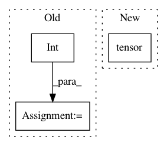

631d4ee2ece28da70d6e22201129f39b4f1dc586,torch_geometric/data/temporal.py,TemporalData,__getitem__,#TemporalData#Any#,17
Before Change
mask = self.t == idx
elif isinstance(idx, slice):
start = idx.start if idx.start is not None else int(self.t.min())
stop = idx.stop if idx.stop is not None else int(self.t.max() + 1)
assert idx.step is None and start <= stop
mask = (self.t >= start) & (self.t < stop)
else:
raise IndexError(
f"Only integers, slices (`:`), and strings are valid indices "
f"(got {type(idx).__name__}).")
After Change
if isinstance(idx, int):
idx = torch.tensor([idx])
if isinstance(idx, (list, tuple)):
idx = torch.tensor(idx)
elif isinstance(idx, slice):
pass
elif isinstance(idx, torch.Tensor) and (idx.dtype == torch.long
or idx.dtype == torch.bool):
In pattern: SUPERPATTERN
Frequency: 4
Non-data size: 3
Instances
Project Name: rusty1s/pytorch_geometric
Commit Name: 631d4ee2ece28da70d6e22201129f39b4f1dc586
Time: 2020-10-26
Author: matthias.fey@tu-dortmund.de
File Name: torch_geometric/data/temporal.py
Class Name: TemporalData
Method Name: __getitem__
Project Name: open-mmlab/mmcv
Commit Name: 5726795c7a3ec0a469aee361c57ff508b6e73886
Time: 2019-04-07
Author: yhcao6@gmail.com
File Name: mmcv/runner/hooks/logger/text.py
Class Name: TextLoggerHook
Method Name: log
Project Name: SPFlow/SPFlow
Commit Name: a25998e30f74d0462e4bf6c0efd8ea20a1cb8d6f
Time: 2020-03-10
Author: steven.lang.mz@gmail.com
File Name: src/spn/algorithms/layerwise/layers.py
Class Name: Sum
Method Name: __init__
Project Name: rusty1s/pytorch_geometric
Commit Name: 2c01aa22c697b4326db05b7729f85613ebb8a8a0
Time: 2018-12-28
Author: matthias.fey@tu-dortmund.de
File Name: torch_geometric/utils/one_hot.py
Class Name:
Method Name: one_hot